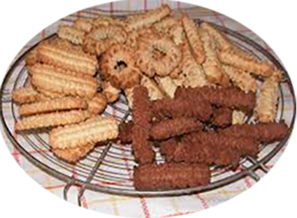

Spritz (sablés)

Pour 20 à 30 (suivant grosseur)
Préparation : 20 mn
Cuisson : 15 à 20 mn
Ingrédients
- 250 gr de farine
- 150 gr de beurre
- 70 gr d'amandes en poudre ou autre
- 125 gr de sucre
- 2 œufs
Recette
- Sortir le beurre 1 h à température ambiante. Il doit être mou pour le travailler.
- Crémez le beurre avec le sucre au batteur jusqu'à ce qu'il devienne bien crémeux.
- Ajoutez les œufs et mélanger à nouveau au batteur jusqu'à ce que le mélange devienne homogène.
- Mélanger la farine et la poudre d'amende.
- Incorporer le mélange farine et la poudre d'amende dans la préparation beurre sucre œufs.
- Préparez une poche à douille munie d'une douille cannelée d'un gros diamètre pour permettre à la pâte de passer correctement.
- Remplissez la douille avec la moitié ou le tiers de la préparation, il faudra pousser très fort !!
- Préparez une plaque de papier sulfurisé, pochez les biscuits en forme de S, W, ou de serpentins.
- Enfournez à 180° 15 à 20 mn.
- Laissez refroidir avant de manipuler.
|